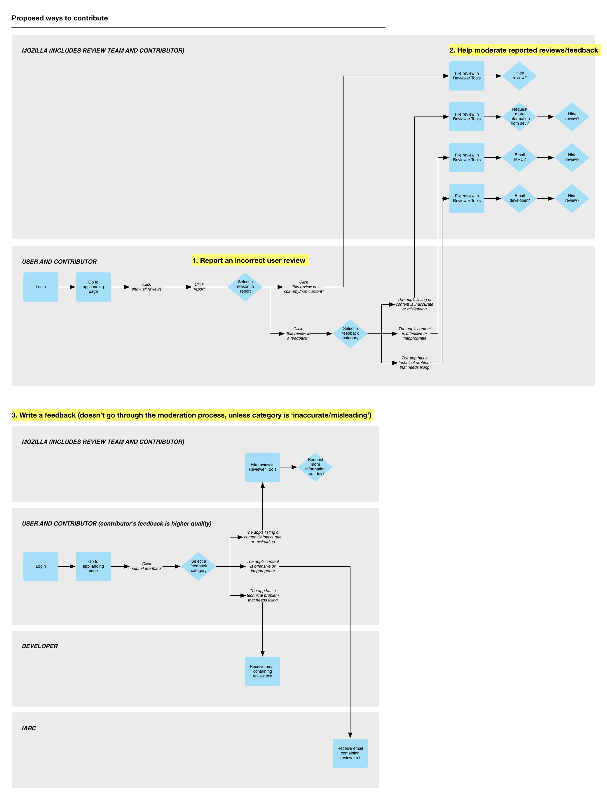

---
layout: MarketplaceUXSpec
multipage: false
---	

<div class="container">
	<h1>Customer Journey Map &rarr; Submitting app feedback to developers</h1>

	<!-- Pagination. If you have more than one page, set the multipage variable in the Frontmatter to true. Editing the pagination code happens in /_includes/homePagination.html. -->
	{% if page.multipage %}
		{% include homePagination.html %}
	{% endif %}

	<div class="col-sm-12 col-md-12 col-lg-12">
	
	  <h2>What is it?</h2>
	  
	  <p class="longText">The abuse patrol program exists not to catch IP thieves or fraudsters in the act, but to empower contributors to submit feedbacks about apps directly to developers. Doing so will increase the accuracy and quality of app listing.</p>
	  
    <p class="longText">The customer journey map goes like this:</p>
    
    <p class="longText">First, there are three ways that you can submit feedback:</p>
    
    <ol class="longText">
      <li>Report an incorrect user review</li>
      <li>Log into the Reviewer Tools and help moderate reported user review</li>
      <li>Write a feedback</li>
    </ol>
    
    <h3>Report an incorrect user review</h3>
    
    <p class="longText">When you report an incorrect user review, you can report it as either:</p>
    
    <ol class="longText">
      <li>This review is <strong>spammy/non-content</strong></li>
      <li>This review is not a review. It’s a <strong>feedback</strong> filed against the app.
        <ol>
          <li>This feedback is about how the app listing/content is <strong>inaccurate/misleading</strong></li>
          <li>This feedback is about how the app content is <strong>offensive/inappropriate</strong></li>
          <li>This feedback is about how the app has a <strong>technical problem</strong> that needs fixing</li>
        </ol>
      </li>
    </ol>
    
    <h3>Log into the Reviewer Tools and help moderate reported user review</h3>
    
    <p class="longText">Regardless of you how report a user review, it’s filed into the Reviewer Tools. When you log into the Reviewer Tools, you can help moderate these reported reviews:</p>
    
    <ol class="longText">
      <li>If the review is <strong>spammy/non-content</strong>: you can choose to hide it or keep it shown in the app details page</li>
      <li>If the review is filed as a <strong>feedback</strong>:
        <ol>
          <li>App listing is <strong>inaccurate/misleading</strong>: you can request more information from developer, then you can hide or keep it shown</li>
          <li>App content is <strong>offensive/inappropriate</strong>: you can email the review to IARC, then you can hide or keep it shown</li>
          <li>App has a <strong>technical problem</strong>: you can email the review to developers, then you can hide or keep it shown</li>
        </ol>
      </li>
    </ol>
    
    <h3>Write a feedback</h3>
    
    <p class="longText">When a feedback is written, it doesn’t go through the moderation process unless the category it’s filed under is <strong>inaccurate/misleading</strong>. This means that:</p>
    
    <ol class="longText">
      <li>If the feedback is filed as <strong>offensive/inappropriate</strong>, it’s sent directly to IARC</li>
      <li>If the feedback is filed as <strong>technical problem</strong>, it’s sent directly to developers</li>
      <li>However, if the feedback is filed as <strong>inaccurate/misleading</strong>, it will be filed into the Reviewer Tools</li>
    </ol>
	  
	  

	  		
	</div>
	
		
